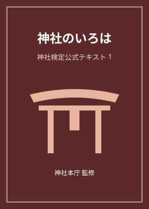

3つの寺社が紅葉に染まる――南相馬、鹿島御子神社など3カ所でライトアップが始まる

城と神社にまつわる新しい動きをお伝えするニュース記事です。出典は福島民友新聞（2026年11月24日、Yahoo!ニュース掲載）です。福島県南相馬市鹿島区の鹿島御子神社、御刀神社、阿弥陀寺で11月21日、紅葉のライトアップが始まり、夜闇に鮮やかな紅葉を照らし出しています。3カ所のうち神社は鹿島御子神社と御刀神社の2社で、阿弥陀寺は寺院です。
3カ所の紅葉、夜闇に浮かぶ
ライトアップの時間は、午後4時半から同7時半ごろです。11月22日と23日には、サーチライトの点灯も行われました。鹿島御子神社と阿弥陀寺では、落葉するまでライトアップが続けられます。
地域の人が企画した、手作りの行事
企画したのは、同市原町区のダイニングバー「だいこんや」の須藤栄治さんです。地域の人が手がけた、身近な秋の光の行事です。
検定の学習ポイント
検定の学習ポイントは、神社の紅葉を楽しむときの見方です。神社の境内にはモミジやイチョウなどが植えられていることが多く、秋には社殿と紅葉の組み合わせが見どころになります。夜間のライトアップでは、社殿や境内が閉まっている場合もあります。参拝するときは、明るい時間の参拝と分けて考え、夜は静かに景色を楽しむのが基本です。関連記事「城と桜・紅葉の名所めぐり｜季節で変わる天守の表情を楽しむ」もあわせてどうぞ。
南相馬市の3カ所のライトアップは、鹿島御子神社と阿弥陀寺では落葉するまで続けられます。お出かけの前に、最新の開催状況をご確認ください。
神楽すずから一言：3つの寺社がいっせいに紅葉に染まるなんて、素敵だね。地域の人が企画した手作りのライトアップって、なんだか温かいな。夜の神社は静かに、紅葉の光を楽しんでね。
城と神社のニュースや検定の情報は、公式SNSでもお知らせしています。InstagramとThreadsの @tabi.kentei をフォローして、最新情報をチェックしてください。
このテーマの柱ページ：城と神社のイベント予定表｜これからの行事と特別公開
同じテーマの記事：
この記事のおすすめ本

表紙イメージ（実際の表紙とは異なります）
PR 神社の本
神社のいろは 神社検定公式テキスト 1
著者：神社本庁 監修
神社検定の公式テキスト。参拝作法から神様、お祭り、歴史まで、神社の基礎的なことがらをQ＆A方式で平易に解説した一冊。神社検定3級の基本テキストです。
Amazonで見る価格はAmazonでご確認ください／リンク先：Amazon.co.jp

表紙イメージ（実際の表紙とは異なります）
PR ガイド・スタンプ帳
日本100名城に行こう 公式スタンプ帳つき
著者：公益財団法人 日本城郭協会
日本100名城の公式ガイドブック。1城1ページで見どころを解説し、巻末がそのまま公式スタンプ帳になります。スタンプラリーを始めるならまずこの一冊。
Amazonで見る価格はAmazonでご確認ください／リンク先：Amazon.co.jp

表紙イメージ（実際の表紙とは異なります）
PR ガイド・スタンプ帳
日本100名城と続日本100名城に行こう 公式スタンプ帳つき
著者：公益財団法人 日本城郭協会
100名城と続100名城、あわせて200城を一冊に収録した合本版。すでに100名城を巡り始めた人が、続編までまとめて持ち歩きたいときに便利です。
Amazonで見る価格はAmazonでご確認ください／リンク先：Amazon.co.jp
当サイトは、Amazon.co.jpを宣伝しリンクすることによってサイトが紹介料を獲得できる手段を提供することを目的に設定されたアフィリエイトプログラムである、Amazonアソシエイト・プログラムの参加者です。価格・在庫はリンク先でご確認ください。